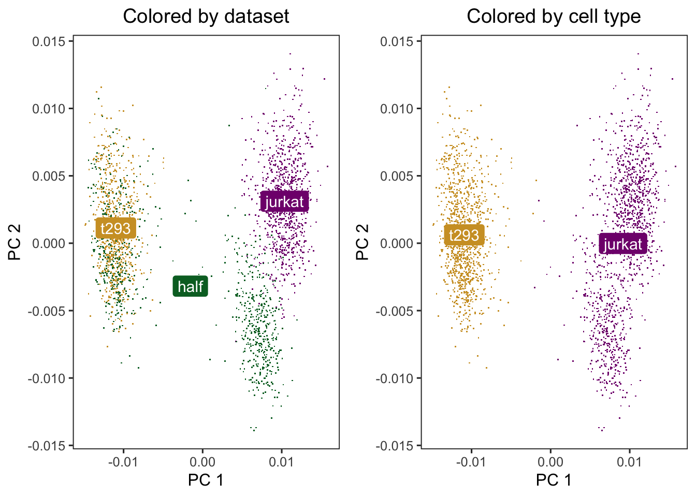
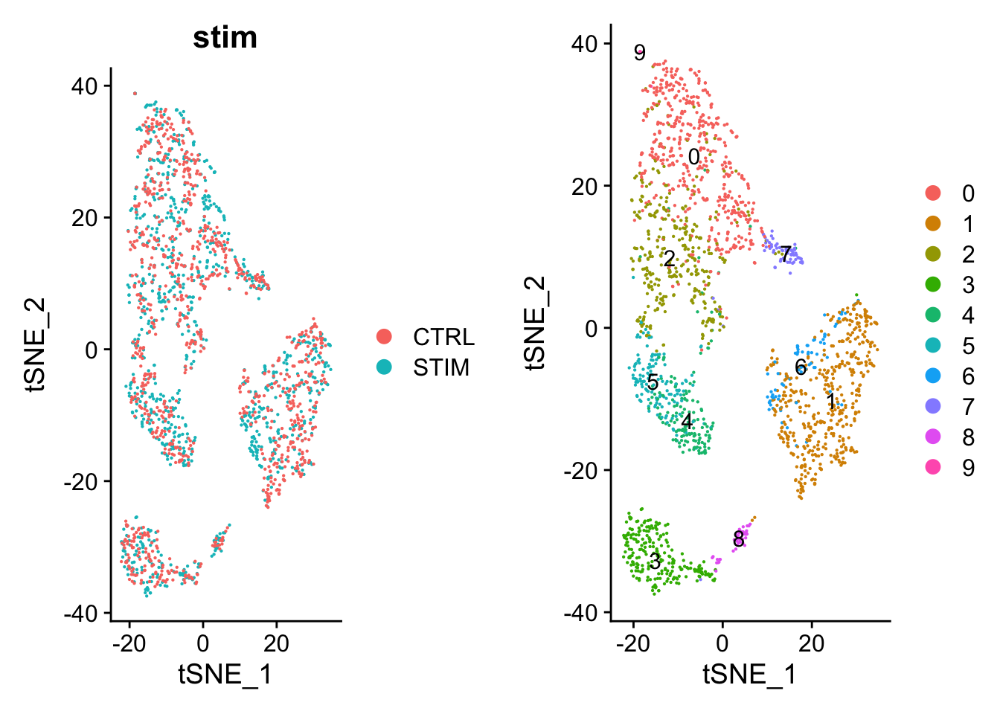

Learning Harmony to integrate single cell RNA-seq data for batch borrection and meta analysis
Harmony allow integrating data across several variables (for example, by experimental batch and by condition), and significant gain in speed and lower memory requirements for integration of large datasets.
Harmony to integrating cell line datasets from 10X
data(cell_lines)scaled_pcs<-cell_lines$scaled_pcsmeta_data<-cell_lines$meta_data### cells cluster by dataset initiallyp1<-do_scatter(scaled_pcs, meta_data, "dataset")+labs(title ="Colored by dataset")p2<-do_scatter(scaled_pcs, meta_data, "cell_type")+labs(title ="Colored by cell type")### combine plotcowplot::plot_grid(p1, p2)

Run harmonoy to remove the influence of dataset-of origin from ceel embeddings. After Harmony, the datasets are now mixed and the cell types are still separate.
### get datadata("pbmcA")data("pbmcB")dim(pbmcA)dim(pbmcB)### downsize the number of cells in each PBMC datasetpbmcA<-pbmcA[, 500]# take 500 cellspbmcB<-pbmcB[, 2000]# take 500 cells
Combine the two datasets into one cell by gene counts matrix and use a meta vector to keep track of which cell belongs to which sample
### combine into one coutns matrixgenes_int<-intersect(rownames(pbmcA), rownames(pbmcB))cd<-cbind(pbmcA[genes_int, ], pbmcB[genes_int, ])### meta datameta<-c(rep("pbmcA", ncol(pbmcA)), rep("pbmcB", ncol(pbmcB)))names(meta)<-c(colnames(pbmcA), colnames(pbmcB))meta<-factor(meta)cd[1:5, 1:2]meta[1:5]
Given this counts matrix, we can normalize our data, derive principal components, and perform dimensionality reduction using tSNE. However, we see prominent separation by sample due to batch effects.
Indeed, when we inspect certain cell-type specific marker genes (MS4A1/CD20 for B-cells, CD3E for T-cells, FCGR3A/CD16 for NK cells, macrophages, and monocytes, CD14 for dendritic cells, macrophages, and monocytes), we see that cells are separating by batch rather than by their expected cell-types.
par(mfrow =c(2, 2), mar =rep(2, 4))invisible(lapply(c("MS4A1", "CD3E", "FCGR3A", "CD14"),function(x){gexp<-log10(mat[x, ]+1)plotEmbedding(emb, col =gexp, xlab ="NA", ylab =NA, main =x, verbose =FALSE)}))
If we were attempt to identify cell-types using clustering analysis at this step, we would identify a number of sample-specific clusters driven by batch effects.
annot_bad<-getComMembership(pcs, k =30, method =igraph::cluster_louvain)par(mfrow =c(1, 1), mar =rep(2, 4))plotEmbedding(emb, groups =annot_bad, show.legend =TRUE, xlab =NA, ylab =NA, main ="Jointly-indentified cell clusters", verbose =FALSE)
### look at cell-type proportion per samplet(table(annot_bad, meta))/as.numeric(table(meta))# Look at cell-type proportions per sample# print(t(table(annot_bad, meta))/as.numeric(table(meta)))
Using Harmony with Seurat
### load required datadata("pbmc_stim")### generate seurat objectpbmc<-CreateSeuratObject( counts =cbind(pbmc.stim, pbmc.ctrl), project ="PBMC", min.cells =5)### separete conditionspbmc@meta.data$stim<-c(rep("STIM", ncol(pbmc.stim)),rep("CTRL", ncol(pbmc.ctrl)))### generate a union of highly variable genespbmc<-pbmc|>Seurat::NormalizeData(verbose =FALSE)VariableFeatures(pbmc)<-split(row.names(pbmc@meta.data), pbmc@meta.data$stim)%>%lapply(function(cells_use){pbmc[,cells_use]%>%FindVariableFeatures(selection.method ="vst", nfeatures =2000)%>%VariableFeatures()})%>%unlist%>%unique## Finding variable features for layer counts## Finding variable features for layer countspbmc<-pbmc|>ScaleData(verbose =FALSE)|>RunPCA(features =VariableFeatures(pbmc), npcs =20, verbose =FALSE)
Clear difference between the datasets in the uncorrected PCs
Harmony works on an existing matrix with cell embeddings and outputs its transformed version with the datasets aligned according to some user-defined experimental conditions.
### run harmony to perform integrated analysispbmc<-RunHarmony(pbmc, "stim", plot_convergence =TRUE)## Transposing data matrix## Initializing state using k-means centroids initialization## Harmony 1/10## Harmony 2/10## Harmony 3/10## Harmony 4/10## Harmony 5/10## Harmony 6/10## Harmony 7/10## Harmony 8/10## Harmony 9/10## Harmony converged after 9 iterations
pbmc<-pbmc|>### perform clustering using the harmonized vectors of cellsFindNeighbors(reduction ="harmony", dims =1:20)|>FindClusters(resolution =0.5)|>identity()## Computing nearest neighbor graph## Computing SNN## Modularity Optimizer version 1.3.0 by Ludo Waltman and Nees Jan van Eck## ## Number of nodes: 2000## Number of edges: 85805## ## Running Louvain algorithm...## Maximum modularity in 10 random starts: 0.8883## Number of communities: 10## Elapsed time: 0 seconds### TSNEpbmc<-pbmc%>%RunTSNE(reduction ="harmony")p1<-DimPlot(pbmc, reduction ="tsne", group.by ="stim", pt.size =.1)p2<-DimPlot(pbmc, reduction ="tsne", label =TRUE, pt.size =.1)plot_grid(p1, p2)

One important observation is to assess that the harmonized data contain biological states of the cells. Therefore by checking the following genes we can see that biological cell states are preserved after harmonization.
### UMAPpbmc<-pbmc|>RunUMAP(reduction ="harmony", dims =1:20)## 20:34:54 UMAP embedding parameters a = 0.9922 b = 1.112## Found more than one class "dist" in cache; using the first, from namespace 'BiocGenerics'## Also defined by 'spam'## 20:34:54 Read 2000 rows and found 20 numeric columns## 20:34:54 Using Annoy for neighbor search, n_neighbors = 30## Found more than one class "dist" in cache; using the first, from namespace 'BiocGenerics'## Also defined by 'spam'## 20:34:54 Building Annoy index with metric = cosine, n_trees = 50## 0% 10 20 30 40 50 60 70 80 90 100%## [----|----|----|----|----|----|----|----|----|----|## **************************************************|## 20:34:54 Writing NN index file to temp file /var/folders/2c/9q3pg2295195bp3gnrgbzrg40000gn/T//RtmpBhrb7C/file51ff59f4665b## 20:34:54 Searching Annoy index using 1 thread, search_k = 3000## 20:34:54 Annoy recall = 100%## 20:34:54 Commencing smooth kNN distance calibration using 1 thread with target n_neighbors = 30## 20:34:55 Initializing from normalized Laplacian + noise (using RSpectra)## 20:34:55 Commencing optimization for 500 epochs, with 83254 positive edges## 20:34:57 Optimization finishedp1<-DimPlot(pbmc, reduction ="umap", group.by ="stim", pt.size =.1, split.by ='stim')### identify shared cell types with clustering analysisp2<-DimPlot(pbmc, reduction ="umap", label =TRUE, pt.size =.1)plot_grid(p1, p2)
![]()